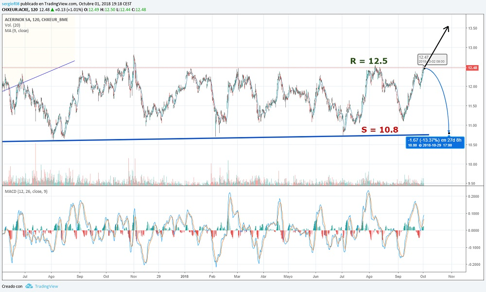

Acerinox currently enjoys an incredible financial strength. It is one if not the best VALUE company of the IBEX35 , with impressive benefits. It has some diversification since it has a plant in the United States. It also behaves like one of the best in its sector. Acerinox is dedicated as its name well indicates to steel. It is a steel manufacturing company that, when there is a good industrial cycle, where mining companies pick up due to the increase in the price of raw materials.
Because steel is produced mainly with iron when there is a lot of demand, it rises and steel prices go up a lot. But being steel and with enough product made when it falls does not receive the punishment that can be received by other mining companies or steel mills being a good defensive value. Also as its other fundamental mineral is nickel is very correlated with the price of this metal.
If we make history we will see as of 2010 there is an excessive demand of raw materials for the boom in China and the unremitting consumption of this metal. Despite the high demand in 2014 due to the 10% drop in Chinese consumption, metals would fall a lot and would be cut short to all the steel and mining sector. The miners and therefore many values in China would fall more than 50%. The Chinese sector would begin to drag the entire world economy, being the first time in history that this happened.
From then on, the mining sector would suffer a turning point. After a fall for a year followed all the indicators point to a rebound and a change of cycle in the sector. In 2016, it would begin to rise slowly to just before the elections, given the promises of the two opponents to encourage spending on infrastructure, a race would occur. Hillary promised 500 million dollars and Trump 1,000 million plus a real promise to help the national industrial sector.
After Trump's victory all the mining companies would start to rise a lot. The metal that best indicates the changes of cycles is copper, and after leaving the minimum of 2000 points, falling in 3 years from 4000 after the Chinese crisis, it would recover in 3 years the 3,000 points.
After that rise that would end shortly before the elections in France, it would correct and it would be forming a lateral channel until nowadays very marked, with a difference between maximums and minimums less than 10%. It is noteworthy that when the nickel has suffered from lower demand Acerinox regardless of what the IBEX35 did corrected strongly.
Here I present the data of fundamentals that I think are most important:
| ### | 2014 | 2015 | 2016 | 2017 | 2018 |
|---|---|---|---|---|---|
| Deuda/ Caja empresa | Total Debt (M) | 616 | 711 | 657 | 622 | 552 |
| Beneficio/valor acción | |||||
| Capitalización(M) | 4.380 | 4.221 | 3.966 | 4.654 | 4.858 |
| EBDITA (M) | 448 | 286 | 322 | 500 | 546 |
| PER | 22,81 | 77 | 47,38 | 16,65 | 15,02 |
| Net Benefit (M) | - | 42,95 | 80 | 234,14 | 254,24 |
| Dividend | 124 | 124 | 124 | 124 | 124 |
| Profitability per share | 3,65% | 1,91% | |||
| Debt/EBDITA | 1,37 | 2,48 | 2,04 | 1,25 | 0,95 |
If we look at the table we will see how it owns a large debt and if we do a count with the old data using the net profit of the company we can draw the conclusion that the company could not get rid of the accumulated debt in about 15 years. This is enough but being aware of the investments in projects that have been carried out in 2016 that debt could be solved in considerably less. In 2015, the debt was reduced by 2000 million compared to 2014, thanks in part to the sale of assets such as Testa for 1,800 million. With the aforementioned new contracts, the debt could be eliminated in a few years and have a fairly sustained growth, being fundamentally a very attractive company at the price quoted and knowing the current capitalization.
The table shows how in 2015 it was the year with a lower capitalization below the 1 billion mark, which caused it to descend from the IBEX35 to the Continuous market, where it continues today. Even so the previous years had accumulated a very bulky debt with possible bankruptcy risk if things were not done well and the market instead of penalizing raised the price with great speculation.
Firstly, I will show a long-term chart showing how the rise that started after the rebound of 2012 would continue, reaching 12,000 points in 2014 and how it would correct up to 8,000 points after the oil crisis in early 2016. From there he would resume his quotation reaching 12 euros per share. Knowing that Acerinox distributes a dividend of 3% to 5% each year, it can be seen that over the years this company has an annual growth rate of 5%, which is a very good figure .
In the graph of Accumulation Distribution you can see how when the stockings have crossed, the quote has changed direction , many times as those shown upwards simple corrections but sometimes have presaged falls in the value as at the beginning of 2015. In fact I bought shares in May 2015 thinking that it was a simple correction and I did not put STOP because I did not have the knowledge that I have now. As much as the fundamentals are good the technician is not usually wrong. The most important thing in the graph is the inclusion of the Nickel index correlated with the value . Looking at the graph you can see how was already notified 3 months before the correction that something was not right .
If we go to a medium-term chart we can see how a side channel was formed with support for Trump's election date and has not lost since then. In figures the support is at € 10.5. This value is quite representative and if we look at the nickel index it has risen since then and has not moved to the value. Being the resistance that presents above € 12.5 quite leathery. Indicating that there is someone who wants to get rid of stocks little by little and that there is no buyer interest, since this company is more for conservative savings because of its beta of minimum variability.
If we want to complete the portfolio with a super defensive value that yields 5% annual returns this is our value . Acerinox has managed to weather many crises in a formidable way and has some very good managers for the shareholder, many of whom want to buy these shares. Therefore to return to € 10.5 or approaching would be a good time to enter. Now we are close to the resistance that could beat it and if it does it will rise with strength being also a good time to position itself. If you start backing wait to buy down.

© 2016 - All Rights Reserved - Diseñada por Sergio López Martínez
![[Valid RSS]](https://www.feedvalidator.org/images/valid-rss-rogers.png "Validate my RSS feed")